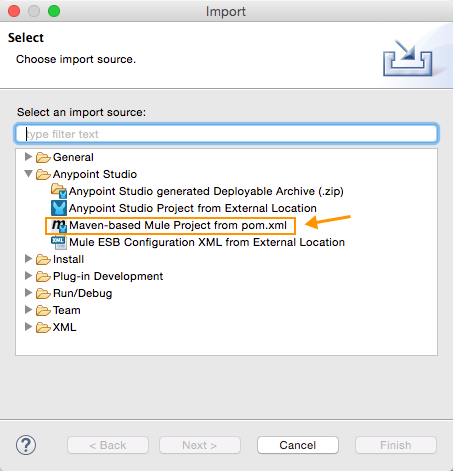
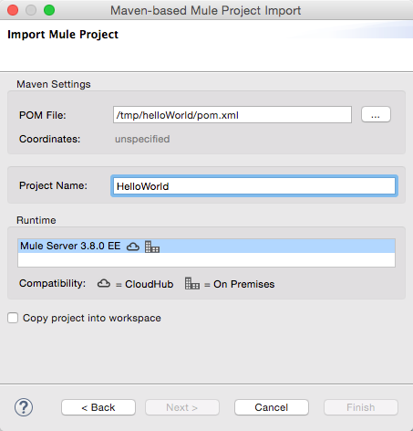
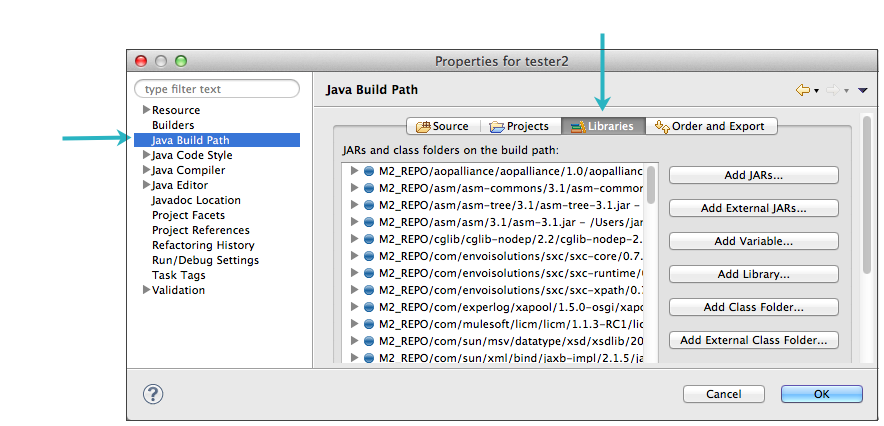
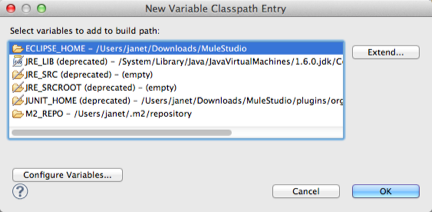
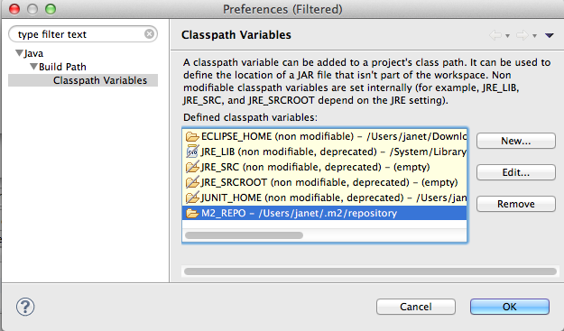

Importing a Maven Project into Studio
If you have a Mule project that was built using Maven outside Anypoint Studio, you can still import it into Studio and continue to work on it with the benefits of the Studio IDE.
| Important: if you use the Maven studio:studio goal, you cannot use the m2ecplipse plugin, because it overrides the studio:studio goal. Anypoint Studio has built in capabilities for importing and exporting between Maven and Studio using the studio:studio goal, which covers most use cases. |
Prerequisites
This document assumes that you have downloaded and installed Anypoint Studio. If you do not have any previous experience with Eclipse or an Eclipse-based IDE, please review the brief introduction to the Anypoint Studio interface. The document also assumes you’re familiar with Apache Maven.
Importing a Maven Project into Studio
Studio has a built-in functionality to import a Maven project.
-
In Studio, go to File > Import…
-
Select Mule > Maven-based Mule Project from pom.xml, then click Next.
 -
Navigate to the location of the pom.xml file you wish to import. Mule automatically populates a Project Name, but you can adjust it.
 -
Be sure to select the runtime you wish to use. Check Copy project into workspace if you want to create a copy of your project that resides in your workspace.
-
Click Finish.
Anypoint Studio then internally runs the studio:studio goal and imports the Maven project into Studio, building the folder structure and files based on the instructions in the POM.
Troubleshooting
M2_REPO Classpath Variable Errors
After you open your Maven project in Studio you might encounter error messages (as illustrated below). You may need to set the M2_REPO classpath variable or, if it has already been set, re-point it to the correct repository.
-
In Studio, right-click your project’s name in the Package Explorer, then select Properties.
-
In the Properties pane, click Java Build Path in the menu on the left, then click the Libraries tab.
 -
Click Add Variable….
-
In the New Variable Classpath Entry panel, click the Configure Variables… button.
 -
Select the
M2_REPOitem from the list of classpath variables, then click Edit….If M2_REPOdoes not appear as an item in the list of classpath variables, click New… to create this classpath variable. -
Change the contents of the Path field to specify the location of your Maven (
.m2) repository.
-
Click OK in each of the open panels to save your changes.
-
Click the Problems tab in the console to confirm that the errors are no longer listed, which means they have been resolved.
Missing Required Repositories
You might also encounter this error:
Failed to execute goal on project schema-extractor-plugin: Could not resolve dependencies for project org.mule.tooling:schema-extractor-plugin:maven-plugin:1.0-SNAPSHOT...
Mule is indicating that some dependencies or artifacts cannot be resolved. Ensure that the required plugin repositories are included in your .pom file.
<pluginRepositories>
<pluginRepository>
<id>mulesoft-release</id>
<name>mulesoft release repository</name>
<layout>default</layout>
<url>http://repository.mulesoft.org/releases/</url>
<snapshots>
<enabled>false</enabled>
</snapshots>
</pluginRepository>
</pluginRepositories>See Also
-
Learn how to build a complete Studio Maven Project, including tests and dependencies.
-
Learn how to "mavenize" an existing Mule project.
-
Learn how to create a gitignore file if you want to implement Git.
-
Explore how to use Studio and Subversion.